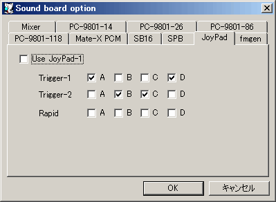

チェックするとジョイパッドを使用します。
ジョイパッドのボタンアサインを指定します。
Trigger-1,2はエミュレート中の音源に接続中の、
A/B/C/DはWindowsマシンに接続されているパッドのボタンです。
SB16, 118音源のゲームポートの場合は、この設定によらず番号順に4つのボタンが割り当てられます。
チェックしておくと連射状態になります。
ここにチェックを入れるとPOVをX, Y軸操作へ変換します。
使用するJoyPadを指定します。
ゲームポートを有効化します。
ゲームポートでアナログX, Y軸入力を可能にします。